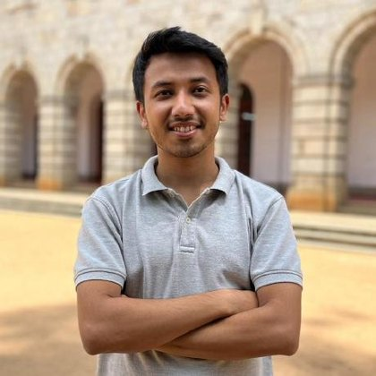

I did my M.Tech (Research) at the Indian Institute of Science (IISc) in Bangalore, from 2023 to 2026. I was advised by Prof. Rajiv Soundararajan in the Visual Information Processing Lab. I am broadly interested in 3D computer vision and graphics. At IISc, I worked on dynamic scene reconstruction and novel view synthesis with 3D Gaussian splatting. My thesis was on maintaining reconstruction quality in moving regions for dynamic 3D Gaussian splatting, in both short and long videos.
I grew up in Dibrugarh, Assam, a small town in the northeastern part of India known for its tea. Before IISc, I did my Bachelor of Engineering (B.E.) in Computer Science and Engineering at Jorhat Engineering College. At IISc, I also served as Secretary of the IISc ACM Student Chapter.
I love movies, and they are a big part of why I like 3D vision. I especially enjoy the cinematography of the Harry Potter films, like this mirror shot in Prisoner of Azkaban. I know little about real filmmaking. So I try to imagine how I could recreate such shots with 3D reconstruction and novel view synthesis.
Outside of work, I enjoy travelling, motorbiking and cooking.
I am currently looking for PhD and research positions in 3D vision and graphics. I am always happy to talk about 3D vision, films, or anything else, so feel free to reach out on LinkedIn or by email.
News
-
Oct 2026
I gave a colloquium talk on Densification Strategies for Dynamic 3D Gaussian Splatting. You can watch the recording.
-
Sep 2026
Our paper Temporally Aware Densification for Dynamic 3D Gaussian Splatting was published at ECCV 2026.
Projects and Publications
- Sustaining Reconstruction Quality in Long-Duration Dynamic 3D Gaussian Splatting Mayurdeep Pathak, Vikram Sandu, Rajiv Soundararajan Under review Project page
- Temporally Aware Densification for Dynamic 3D Gaussian Splatting Vikram Sandu, Mayurdeep Pathak, Rajiv Soundararajan European Conference on Computer Vision (ECCV), 2026 Project pagearXiv
- GlobeMetrics: A Healthcare Framework for Video Based Saccade Characterization Debanga Raj Neog, Pharvesh Salman Choudhary, Mayurdeep Pathak IEEE Conference on Artificial Intelligence (CAI), 2024 Paper